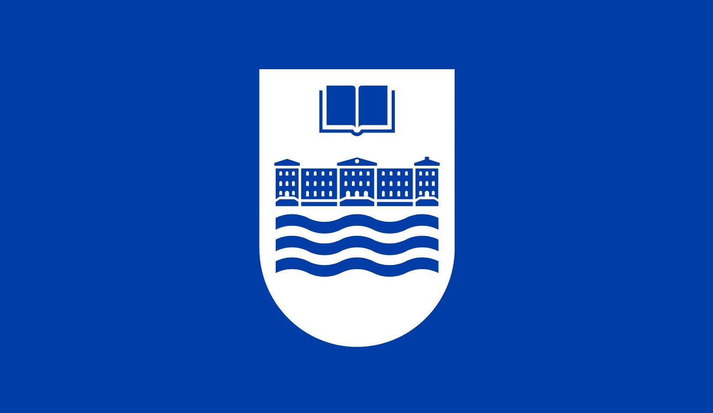
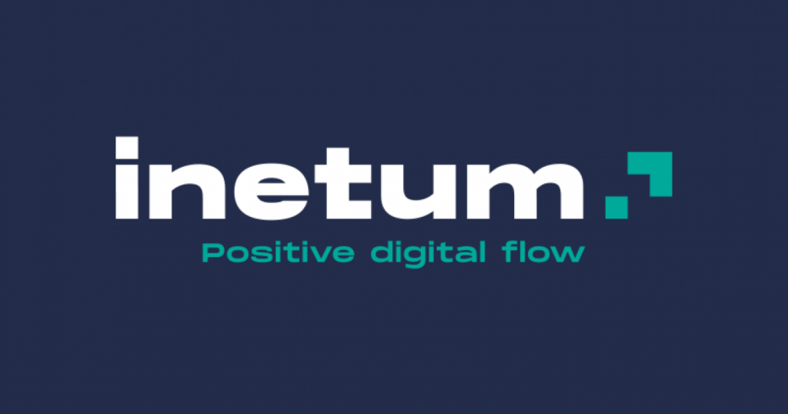

Formación Académica
Universidad de Deusto
Doble Grado en Ingeniería Informática + Ciencia de Datos e IA
Actualmente estoy realizando una formación académica en la Universidad de Deusto, donde estudio el Doble Grado en Ingeniería Informática y Ciencia de Datos e Inteligencia Artificial. Durante estos años he adquirido una sólida base en programación, análisis de datos, machine learning e inteligencia artificial, abordando técnicas de machine learning, deep learning y análisis avanzado de datos.
Inicié mis estudios en septiembre de 2022, con finalización prevista en junio de 2027.

Proyectos Destacados
Detección de Anomalías en Precios de Stock
Detección no supervisada de anomalías en series temporales de cinco grandes tecnológicas del S&P 500 (AAPL, GOOGL, MSFT, NVDA, TSLA) con 20 años de histórico. Implementa dos autoencoders en PyTorch —LSTM y Transformer— entrenados sobre ventanas de 30 días: los puntos en el percentil 95 de error de reconstrucción se marcan como anomalías, capturando eventos reales como el crash del COVID-19 en 2020.
Ver en GitHub →FinTracker — Análisis de Noticias Financieras
Pipeline completo de NLP sobre un corpus propio de 5.160 artículos financieros scrapeados de empresas del S&P 500. Integra clasificación temática con FinBERT fine-tuneado (92,8% accuracy), resumen automático con T5 y LLaMA, y reconocimiento de entidades con NeuroBERT-NER en un pipeline end-to-end reproducible.
Ver en GitHub →Risk Assessment en Inversiones de Oro
Agente de Reinforcement Learning que opera en el mercado de futuros del oro (GC=F) usando bonos del Tesoro americano e índice USD como contexto macroeconómico de cobertura. Construido sobre entornos Gymnasium personalizados con 10 indicadores técnicos de riesgo, tendencia y momentum, aprende políticas de trading seguras orientadas al control del riesgo, no solo a maximizar el beneficio bruto.
Ver en GitHub →Experiencia Profesional
LKS Next - GobTech
Estudiante en prácticas – Proyecto de IA generativa
Durante el verano realicé una estancia de dos meses en la empresa LKS Next, en el departamento GobTech. En ese tiempo pude colaborar en proyectos reales, adquiriendo experiencia práctica en el desarrollo de soluciones tecnológicas. Esta oportunidad me permitió aplicar mis conocimientos y seguir creciendo en un entorno profesional.
Allí me involucré en el desarrollo desde cero de un agente RAG integrado con el protocolo MCP, capaz de combinar recuperación de información y generación automática. Este proyecto me permitió profundizar en arquitecturas modernas de agentes de IA y en la conexión con herramientas externas.
Tecnologías: Python · LangChain · LangGraph · LLMs (OpenAI) · FastMCP · Base de datos vectorial · Memoria conversacional
Inetum
Data Science Intern
En diciembre de 2025 empecé mis prácticas en la empresa Inetum, donde estoy tenido la oportunidad de colaborar en proyectos reales, adquiriendo experiencia práctica en el desarrollo de soluciones tecnológicas y IA. Esta oportunidad me permite contribuir en proyectos tecnológicos y basados en datos dentro de un entorno empresarial, trabajando con datos estructurados, procesos de negocio y sistemas orientados a producción.
Tecnologías: Python · (SkLearn) · (TensorFlow) · (Pandas) · SQL · Power BI · Shiny
